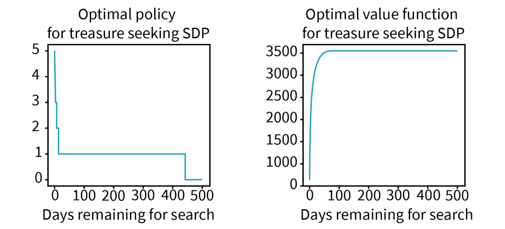

DLMAIRIL01 - Source-derived printable review sheet
Condensed from the same learning note. No additional teaching topics or official examination questions. Formulas and fonts render offline.
The source treasure program implements backward induction using a six-entry action-value workspace and growing optimal-value/policy arrays, with output indexed by days remaining.
| Term | Meaning |
|---|---|
| Backward recursion | Build a solution from smaller remaining horizons. |
| Scratch action-value array | Reusable candidate values for one current state. |
| Value array | Stored optimal expected returns. |
| Policy array | Stored maximizing actions. |
| Remaining-day index | Number of usable search days including the current one. |
Evaluate six actions, store their maximum and its action, then reuse that maximum as the next iteration's continuation.
The program's third remaining-day calculation gives a three-hour initial rental and expected return 1469.4. Its stored first, second and third entries refer to one, two and three days remaining; the chronological decisions are read in reverse remaining-day order.
Study these with the detailed explanation in the linked Obsidian note.

Answer before expanding. Open the answers before printing to include them.
The optimal value for one fewer remaining search day.
Future searching is needed only when the treasure is not found.
There are six possible integer rental durations from zero to five hours.
The action attaining the best value at each remaining-day count.
Five hundred.
Days remaining for search, not chronological vacation day.
Rent for three, then four, then five hours if search is still needed.
Learning note: 06_worked_appendices/a_treasure_seeking.
Course book pp. 184-187. Printed page + 2 = PDF viewer page. Personal-study use.